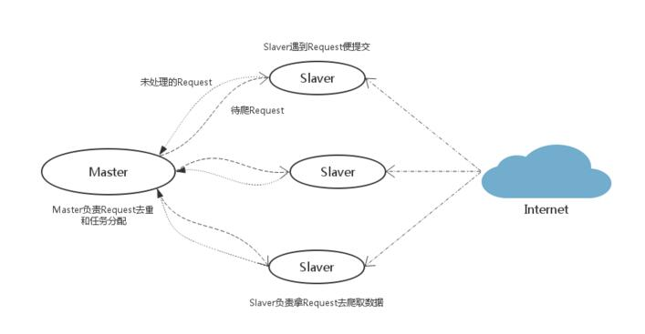
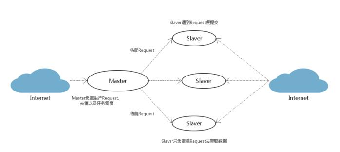
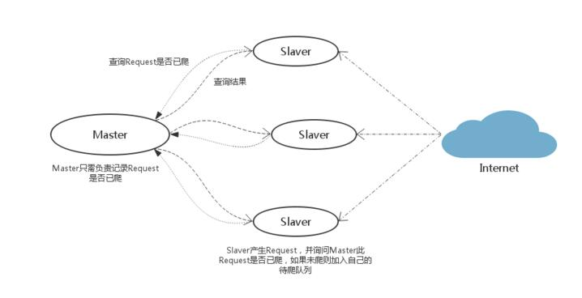

基于 Redis 的三总分布式爬虫策略
前言
爬虫是偏IO型人物，分布式爬虫的实现难度比分布式计算和分布式存储简单的多，分布式爬虫主要需要考虑的问题有以下几点：
- 爬虫任务的统一调度
- 爬虫任务的统一去重
- 存储问题
- 速度问题
- 足够强壮并且简单方便
- 支持“断点续爬”
Python 分布式爬虫比较常见的是用 scrapy 框架加上 Redis 内存数据库，中间的任务调度等用 scrapy-redis 模块实现。此处介绍一下基于 Redis 的三种分布式策略，其实他们之间还是很相似的，只是为了适应不同的网络或爬虫环境做了一些调整。
策略一

Slaver 端从 Master 端拿到任务 Request/URL/ID 进行数据抓取，在抓取数据的同事也生成新任务，并将任务抛给 Master。Master 端只有一个 Redis数据库，负责对Slaver 提交的任务进行去重，加入待爬队列。
优点：scrapy-redis 默认使用的就是这种策略，我们实现起来很简单，因为任务调度等工作 scrapy-redis 已经帮我们做好了，我们只需要继承 RedisSpider、指定 redis_key 就行了。
缺点：scrapy-redis 调度的任务是 Request对象，里面信息量比较大 （不仅包括URL，还有callback函数、headers等信息），导致的结果就是会降低爬虫速度。尔且会占用 Redis 大量的存储空间。当然我们可以重写方法来实现调度 URL 或者 用户ID。
策略二

这是对策略的一种改进：在 Master 端跑一个程序去生成任务 (Request/URL/ID)。Master 端负责的是生产任务，并把任务去重、加入到待爬队列。Slaver 只管从 Master 端拿任务去爬取。
优点：将生成任务和抓取数据分开，分工明确，减少了 Master 和 Slaver之间的数据交流；Master 端生成任务还有一个好处就是可以很方便的重写判重策略（当数据量大时优化判重的性能和速度还是很重要的）。
缺点：像QQ或者新浪这种网站，发送一个请求范湖的内容里面可能包含几十个待爬的用户ID，即几十个新的爬虫任务。但有些网站一个请求只能得到一两个新任务，并且返回内容里也包含爬虫要抓取的目标信息，如果将生成和抓取任务分开反而会降低爬虫的效率。冰晶带宽也是爬虫的一个瓶颈问题，我们要秉承着发送尽量少的请求为原则，同时也是为了减轻网站服务器的压力，要做到一只有道德的 Crawler。所以视情况而定。
策略三

Master 中只有一个集合，它只有查询的作用。Slaver在遇到新任务时询问 Master 此任务是够已经爬取，如果未爬则加入 Slaver 自己的待爬队列中，Master 把此任务记为已爬。他和策略一比较像，但是明显比策略一简单。策略一的简单是因为有 scrapy-redis 实现了 scheduler 中间件，他并不适用于非 scrapy 框架的爬虫。
优点：实现简单，非 scrapy 框架的爬虫也适用。Master 端压力比较小，Master 和 Slaver 的数据交流也不大。
缺点：强壮性还不够，需要另外定时保存待爬队列以实现断点续爬功能。各 Slaver 的待爬任务不通用。
结语
如果把 Slaver 比作工人，把 Master 比作工头。策略一就是工人遇到新任务都上报给工头，需要干活的时候就去工头那里领任务；策略二是工头去找任务，工人只管从工头那里领任务干活；策略三就是工人遇到新任务时询问工头此任务是否有人做了，没有的话工人就将此任务加到自己的行程表。
本文转载，感谢原作者（原文链接：http://blog.csdn.net/bone_ace/article/details/50989104）